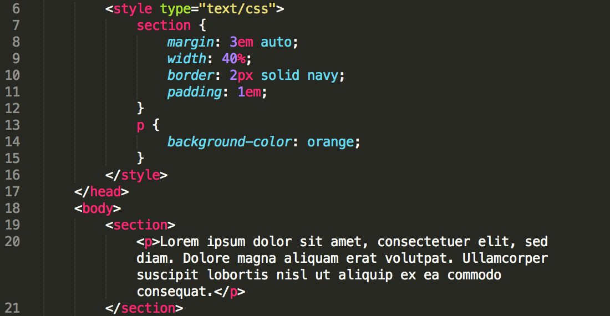
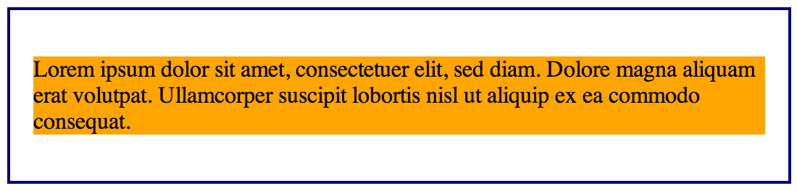
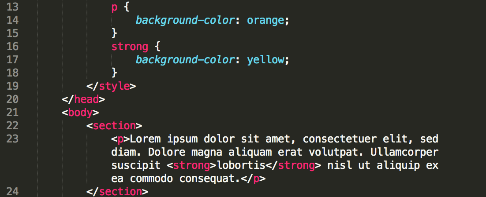
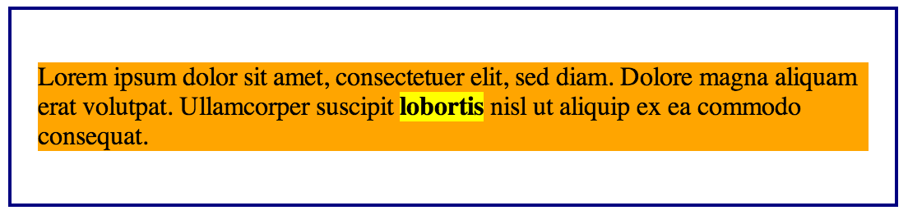
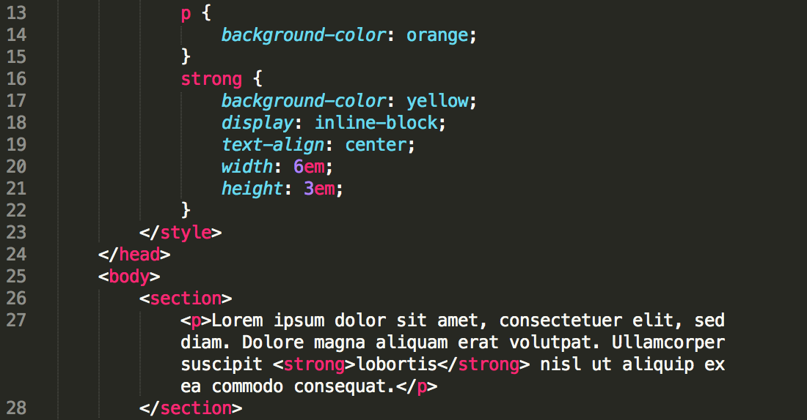
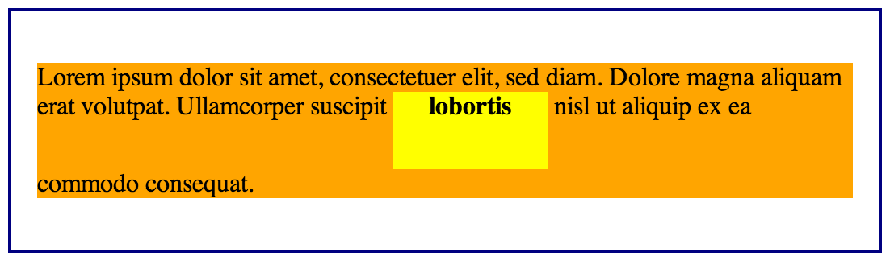

Getting to know CSS Elements - Block, inline & inline-block
by Ernie Salazar
Posted on May 04, 2014
So you’ve been getting to know a little about CSS. Perhaps you’ve learned that your HTML is built using tags which create elements. For example, you might have seen "header", "nav", "div" and "p". You can style those elements in CSS with all kinds of fun modifications. Before you jump in to far however, you should know a little about how those elements display by default and how you can modify them.
By default, many of the more common elements will display as blocks. Basically, that means they will take up the entire width of the area they’re in. For example, a "p" which is a paragraph element will fill a column entirely with its text. Let’s have a look.


I’ve added a bit of styling to create our section border. As for the paragraph, I’ve only added some back ground color. You can see the "p" element fills the entire space.
Inline
Now let’s look at inline. While "p" had a default display of block, tags such as "em" and "strong" have default display of inline. Basically, they display that element inline with its surroundings but they are contained by their surrounds dimensions. Let’s take a look.


A "strong" tag is quick way to bold a particular element. I again added only some background color to this element. You can see it is within or inline with its surrounds with our changing its dimensions.
Inline-block
What about inline-block. Well this allows us to create a new block element. This time however, while it continues to be within or inline with its surroundings, we can adjust its dimensions. Let’s take a look.


By adding changing the display value of the strong element to inline-block, we created a whole new block that we were able to scale. While I used text and "strong" to walk through these examples, perhaps a more common and useful use of inline-block is with "img" elements. This allows you to add images within the context of it surrounding text without filling the entire width of the section.